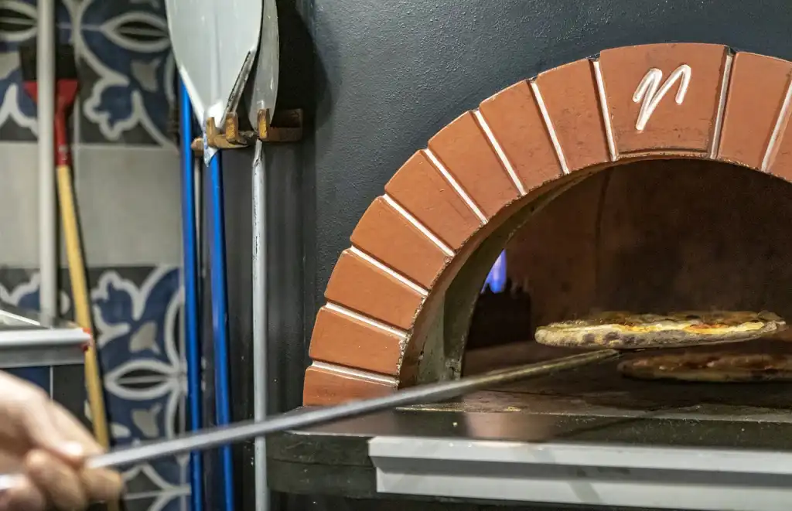
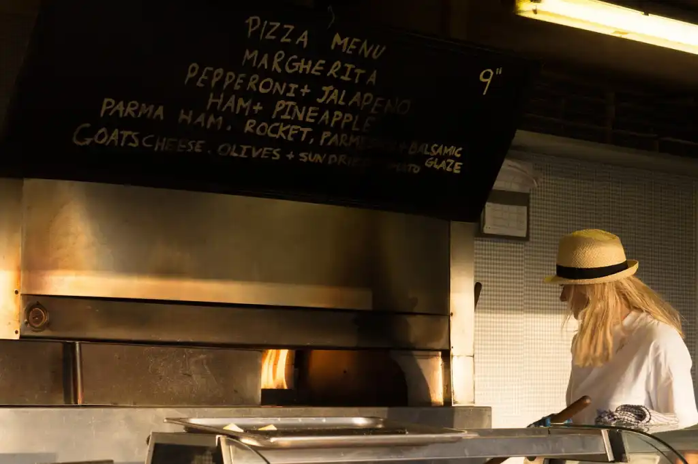
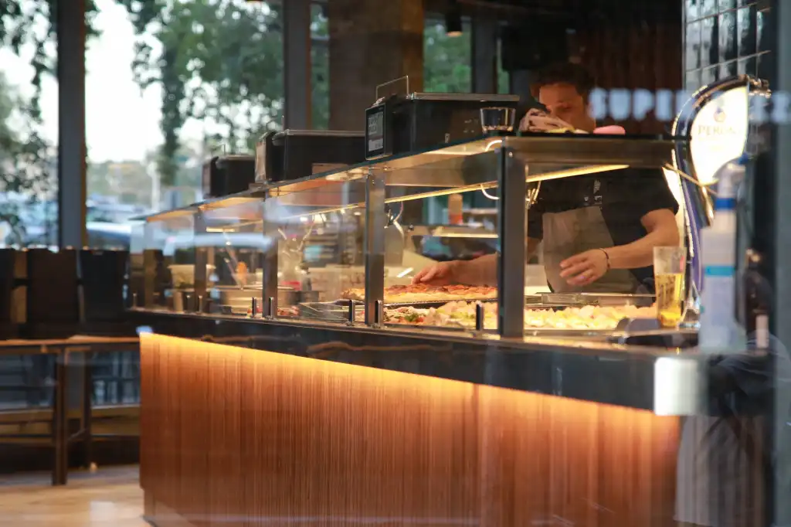

Ресторанный бизнес сложен в организации, однако исключительно выгоден, особенно, если это фаст-фуд. Расскажем о тонкостях выпекания настоящей итальянской пиццы на тонком тесте.
Актуальность бизнес-идеи
Любовь к этому блюду итальянской кухни давно стала всемирной и претерпела изменения в зависимости от региона. В пиццу добавляют ананасы, майонез, рыбу и даже черную икру. Настоящую итальянскую пиццу на лепешке тонкого теста из дровяной печи найти в России очень сложно.
Затраты и прибыль
Для запуска небольшой пиццерии потребуется 265 000 рублей. Выйти на хорошую прибыль получится не сразу, однако с ростом спроса будет расти и доход. Выйти на окупаемость можно за полгода с небольшим при минимальной прибыли в 40 000 рублей.
Разрешения и документы
Регистрация бизнеса
Для начала зарегистрируйте ИП и заключите договор аренды с городом или ТЦ, в зависимости от того, где будет располагаться пиццерия. В случае отдельно стоящего здания вам понадобится заключить договор о вывозе мусора. Во втором случае можно использовать контейнеры ТЦ. Аналогично и с установкой счетчика электроэнергии — отдельный договор на потребление электричества или пункт в общем договоре аренды.
Документы для регистрации ИП
Заполните заявление по форме № P21001, приложите к нему копию паспорта и чеки об уплате госпошлины. Через 3-5 рабочих дней вы можете забрать свидетельство индивидуального предпринимателя в налоговой инспекции.
Выбор помещения
Вы можете арендовать отдел в торгово-развлекательном центре и тогда ваши клиенты будут сидеть на общем пространстве фудкорта. Другой вариант — арендовать отдельное помещение на центральных улицах города.
Во втором случае стоимость аренды напрямую зависит от площади помещения. Не каждый начинающий предприниматель располагает бюджетом для оплаты большого зала, поэтому предлагаем уловку. Арендуйте небольшое помещение с двумя-тремя столиками, а за пиццу на вынос предлагайте скидку. Такой подход популярен в Италии и других европейских странах.
Вам подойдет помещение площадью не менее 20 метров с хорошей вентиляцией и теплым камерным освещением. Приветствуются высокие потолки и дизайн в стиле типичных пиццерий юга Италии.
Дровяную печь не нужно прятать в отдельном помещении, поскольку пицца должна готовиться прямо на глазах у посетителей.
Нужды в отдельной кухне тоже нет. Пиццайоло замешивает и раскатывает тесто у всех на виду. Процесс выглядит настолько завораживающе, что сам по себе станет рекламой вашему бизнесу.
Минимальные расходы на аренду помещения составят 35’000 рублей ежемесячно, плюс оплата коммунальных услуг в размере 5’000 рублей.
Оборудование
Настоящая дровяная печь — сердце и душа итальянской пиццерии. Вам подойдет печь вместимостью на 4-6 пицц. Печь меньшей вместимости не имеет смысла, а большей требует дополнительных затрат в обслуживании.
Стандартный набор оборудования для приготовления пиццы:
- Печь, 1 штука — 60’000 рублей
- Стол под печь, 1 штука — 25’000 рублей
- Лопатка, 1 штука — 1’500 рублей
- Тестомес, 1 штука — 4’500 рублей
- Просеиватель муки, 1 штука — 800 рублей
- Овощерезка, 1 штука — 2’200 рублей
- Измельчитель сыра, 1 штука — 1’500 рублей
- Морозильная камера, 1 штука — 8’000 рублей
- Холодильник, 1 штука — 13’000 рублей
- Доски и другой кухонный инвентарь — 5’500 рублей
- Итого — 122’000 рублей
Вдоль окна можно расположить широкую стойку для гостей, количество столиков зависит от площади помещения. Расходы на мебель и декор — 70’000 рублей.
Как выбрать поставщика
Выбор поставщика зависит от типа продуктов. Продукты для основы пиццы можно закупать на любой оптовой базе, так будет дешевле. Свежие овощи и зелень лучше брать на рынке и тщательно следить за их качеством.
Моцареллу, пармезан, анчоусы, каперсы и другие типичные итальянские специалитеты покупайте в специализированных магазинах, поскольку от них зависит вкус конечного продукта. Ежемесячные расходы на продукты составляют 50’000 рублей.
Персонал
Для запуска небольшой пиццерии достаточно повара-пиццайоло и кассира. Первый отвечает только за кухню, второй принимает оплату у клиента и выдает готовую пиццу.
Расчет расходов на заработную плату с учетом средних данных по региону на HeadHunter:
- Пиццайоло, 2 человека — 70 000 рублей
- Кассир, 2 человека — 50 000 рублей
- Итого — 120 000 рублей
Как рекламировать бизнес
Хорошая пицца не нуждается в дополнительной рекламе. Оповестите по максимуму о своем открытии, а также заведите инстаграм для публикации новостей пиццерии. Там вы можете сообщать, например, про пиццу недели и другие акции, собирать обратную связь от ваших клиентов.
Плюсы и минусы бизнес-идеи
Преимущества:
- Нет необходимости в дополнительной рекламе
- Аудитория с любым уровнем дохода
- Перспективы роста до сети
Недостатки:
- Конкуренция
- Репутационные риски
- Зависимость от поставщиков продуктов
Поставить проект на ноги может оказаться проще, чем кажется, но гораздо сложнее удержаться на них. После выхода на окупаемость можно угодить на так называемый потолок в росте прибыли, спасти от которого может только расширение до сети или хотя бы второй пиццерии, что очевидно повлечет за собой расходы на старте. Желаем удачи!